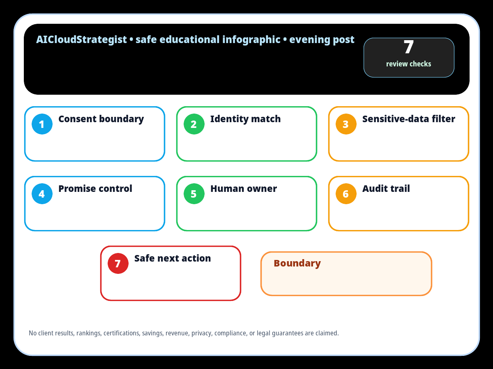

1. Consent boundary
Confirm the meeting-notes source is allowed for internal processing before copying anything into CRM.
AICloudStrategist safe educational publication · Evening · 2026-09-28
A safe educational gate for owners and operators to review meeting notes before CRM updates, follow-up tasks, or automation handoffs without making legal, revenue, privacy, or guaranteed-performance claims.

Confirm the meeting-notes source is allowed for internal processing before copying anything into CRM.
Match the contact, company, owner, and deal record before creating tasks or updating fields.
Remove unnecessary personal, health, financial, legal, credential, or confidential details from summaries.
Separate facts from guesses; do not convert casual discussion into commitments, pricing, dates, or guarantees.
Assign a named reviewer for ambiguous notes, objections, next steps, and customer-facing replies.
Keep source link, timestamp, automation rule, reviewer, and change reason visible for later review.
Create a draft task or internal reminder first; send external follow-up only after approved review.
Educational operations guide only — not legal, compliance, privacy, security, sales, revenue, medical, financial, approval, or guaranteed-performance advice.
No client results, testimonials, rankings, certifications, savings, revenue, privacy, compliance, security, legal, or approval guarantees are claimed.
SVG infographic · PNG infographic · CSV checklist · AI answer card
Need a practical review? Request a free business review through AICloudStrategist, email contact@aicloudstrategist.com, or WhatsApp +91 87963 02608.